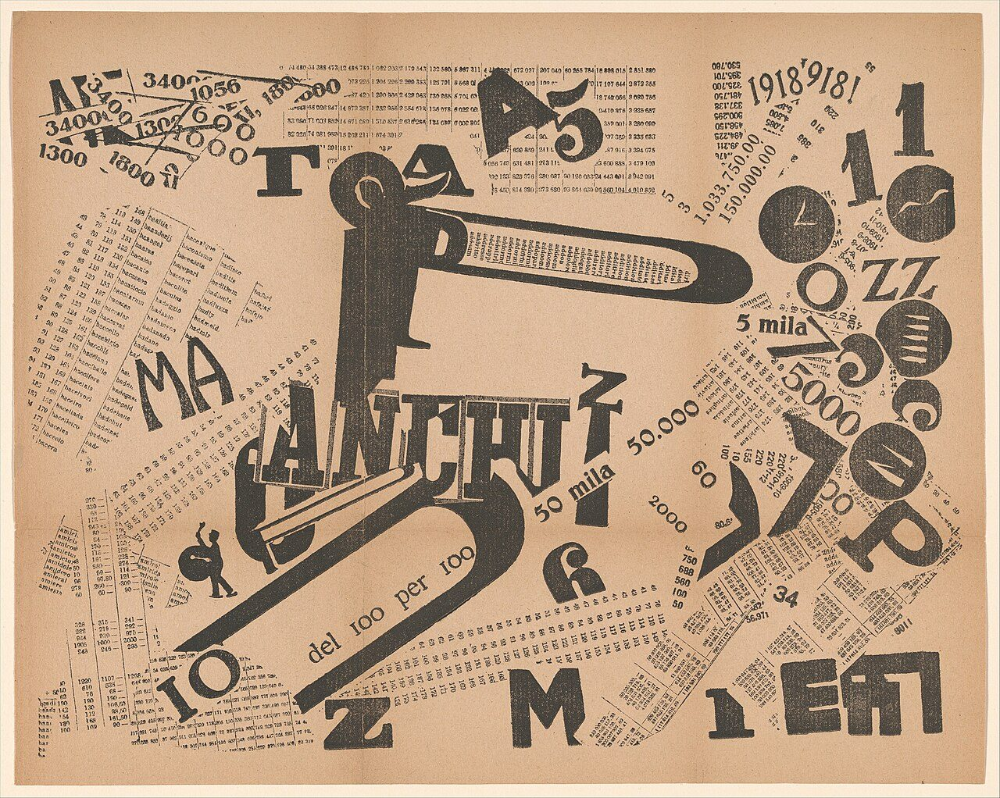

References / Book / 403
A Tumultuous Assembly. Numerical Sensibility
A words-in-freedom plate in which F. T. Marinetti builds a shouting figure from giant letters and surrounds it with tilted columns of printed numbers, prices, and tables.
- Source
- The Metropolitan Museum of Art: Une Assemblée tumultueuse. Sensibilité numérique (1995.511.2)
- Creator
- Filippo Tommaso Marinetti
- Made
- 1919
- Style
- Italian Futurism (agent-proposed, not yet reviewed by a person)
- Moods
- Loud, mechanical, exuberant
- Evidence
- Downloaded and inspected the Met’s image as uploaded to Wikimedia Commons_published_in_Les_mots_en_libert%C3%A9_futuristes_MET_DP371750.jpg) (original 3917 × 3127 px; a 1280 × 1022 px rendering was inspected and stored). The physical copy is the Met’s sheet, accession number 1995.511.2, as stated in the Commons record.
- Reviewed
- Rights
- Open license, stored. License: CC0-1.0. Rights policy
Context
Letterpress, 26.7 × 33.0 cm, published in 1919 in Les mots en liberté futuristes. The Metropolitan Museum of Art, Drawings and Prints, 1995.511.2, gift of W. Michael Sheehe, 1995. Commons record from the Met_published_in_Les_mots_en_libert%C3%A9_futuristes_MET_DP371750.jpg).
The same book contains Le Soir, couchée dans son lit.
Observed
- At the center, a standing figure is built from a giant black “P”, a long black hook like an arm or a mouth, the word “ANCHUZ” in heavy capitals, and a large “5” as the legs.
- Inside the hook, small columns of text run along its length.
- Columns of tiny numbers and words, like tables or price lists, are pasted at many angles across the whole sheet.
- Large isolated letters and numbers stand around the edges: “MA”, “T”, “A5”, “M”, “Z”, “1”, “10”, “1918 918!”.
- At right, letters such as “O”, “ZZ”, and “E” are set inside black discs, and a clock face appears among them.
- Prices and quantities such as “50 mila”, “50.000”, “5000”, and “del 100 per 100” are set in medium sizes at different tilts.
- Printed in black only on buff paper with a center fold.
Why it belongs
The page treats a crowd as data: the “assembly” is made of numbers, statistics, and prices, and the shouting figure at the center is a typographic puppet. It anticipates the mechanical figures of the 1920s that the style record describes.
The tilted tables show how even dense, small text can become texture and motion when it is set at angles.
Borrow
Build a figure or mascot from giant letters and numbers.
Use tables of small numbers as a tilted background texture behind large type.
Put single letters inside solid circles as accents.
Measured
Machine-extracted by tools/image-traits.py on . Full measurement.
- Mean chroma
- 0.22
- Palette
- #debc9d 39%
- #d7b18d 18%
- #514a41 12%
- #cca47f 8%
- #faead6 5%
- #65594c 3%
- #b2967c 3%
- #a58c74 3%

